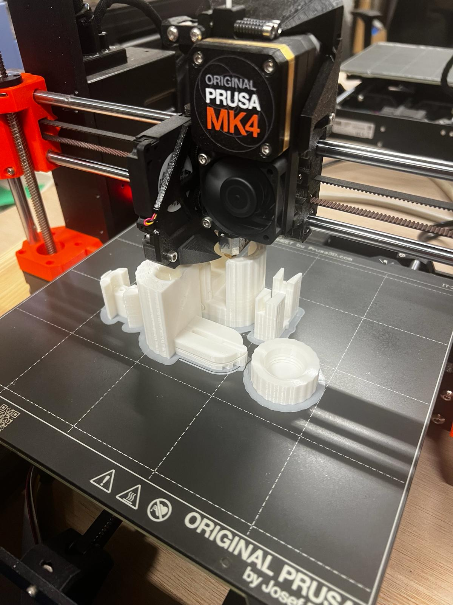
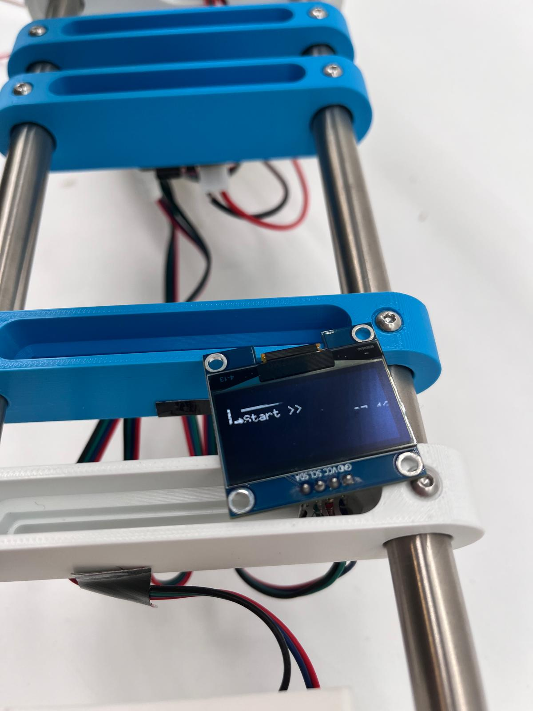

Rebottle Initiative
In collaberation with Marta Artiach, Isabel Sanchez, Isabel Peña and Olivia Zanolori.
The ReBottle Initiative explores how plastic waste can be transformed into a local material resource. Developed through a sustainability grant at IE University, the project focused on collecting PET plastic bottles and converting them into 3D printing filament, creating a potential circular system where waste generated on campus could be reused for student prototyping and fabrication.


Project Brief: Plastic bottles are one of the most commonly purchased items on IE University campus, yet few are recycled into materials that directly benefit students. We wanted to explore whether this waste stream could become a valuable resource by converting discarded PET bottles into 3D printing filament.
Process
The machine works by cutting PET bottles into a continuous ribbon, which is then heated, extruded, and wound onto a spool as 1.75mm filament. Over the course of the project, we assembled the machine using 3D printed components, mechanical systems, and extrusion technology, while testing different settings to produce consistent results. One of the biggest challenges was calibrating the extrusion process. Small changes in temperature, feed rate, and tension could significantly affect the quality and diameter of the filament, requiring extensive testing and adjustment before achieving reliable output.


The final machine successfully converted PET bottles into printable filament, demonstrating a practical method for extending the life of plastic waste. While the project remained at the prototype stage, it established a proof of concept for a campus-wide circular manufacturing system where discarded bottles could be collected, processed, and reused by students for future projects. Beyond the technical build, the project gave me the opportunity to explore robotics, fabrication systems, and sustainable manufacturing at a scale that extended beyond my typical design work. It reinforced the idea that waste can be viewed not as an endpoint, but as the beginning of a new material lifecycle.
Skills: Circular Design, Rapid Prototyping, Mechanical Systems, Sustainable Manufacturing, Research, Assembly, Testing, Problem Solving.
Tools: 3D Printing, Electronics Assembly, Digital Fabrication, Mechanical Assembly, Extrusion Technology